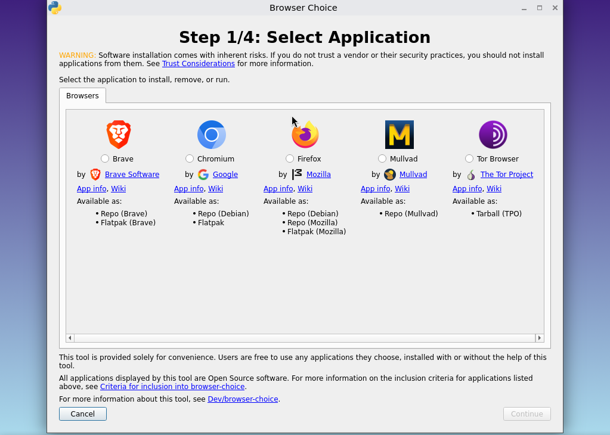
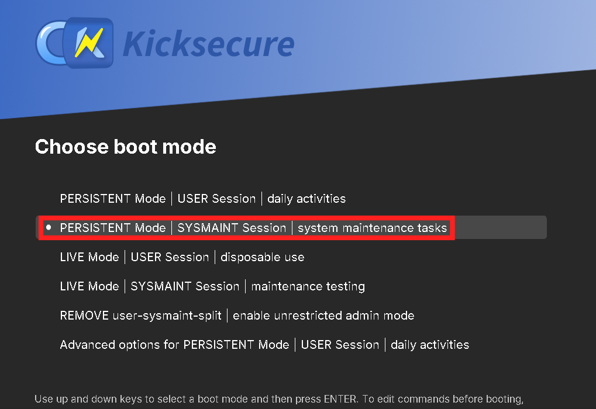
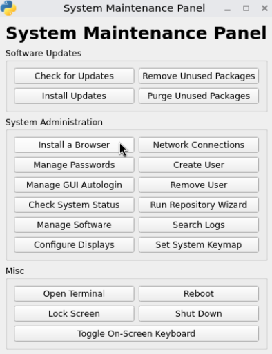
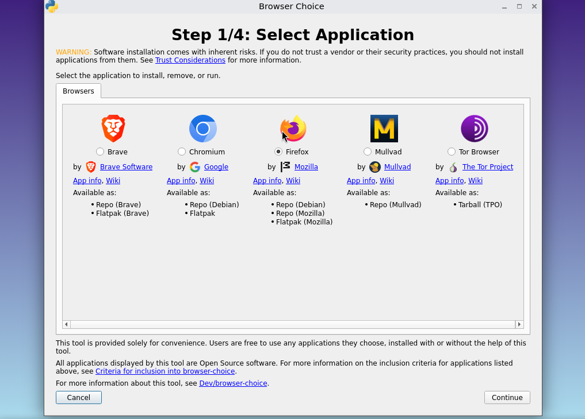
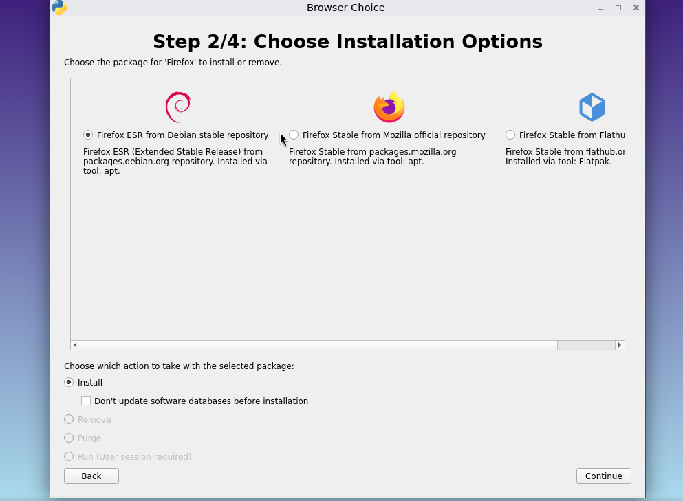
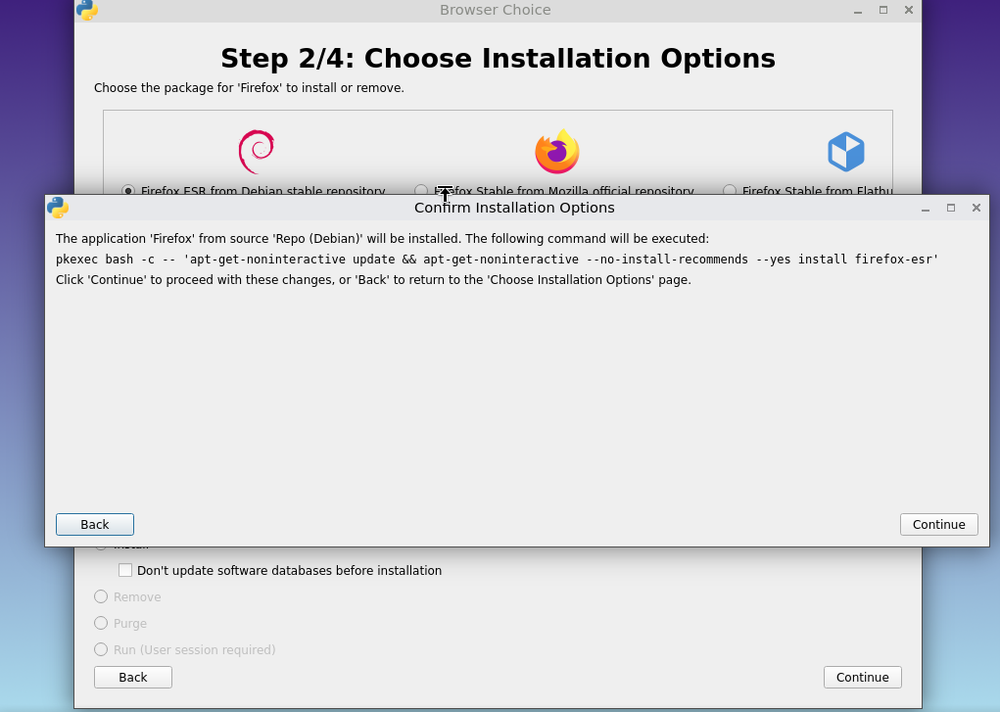
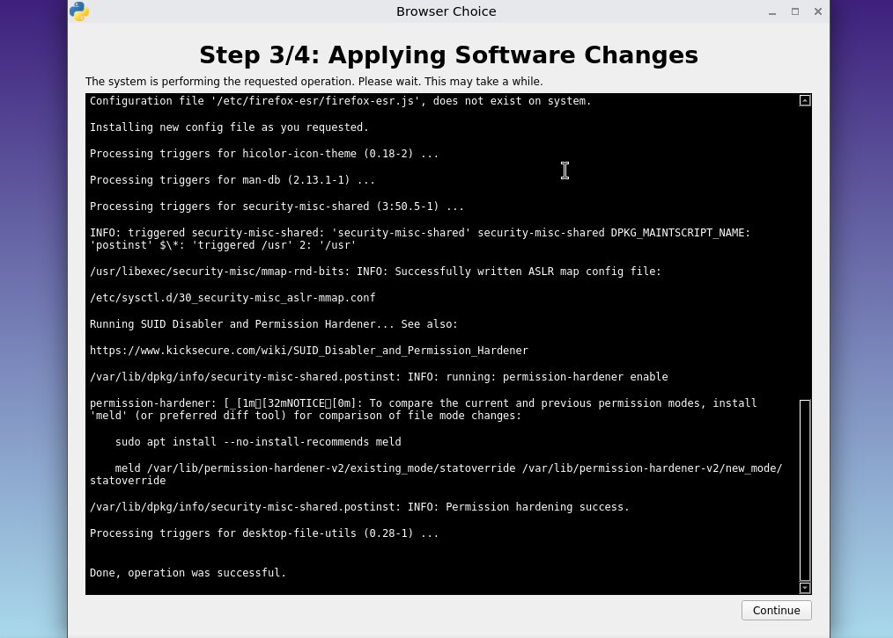
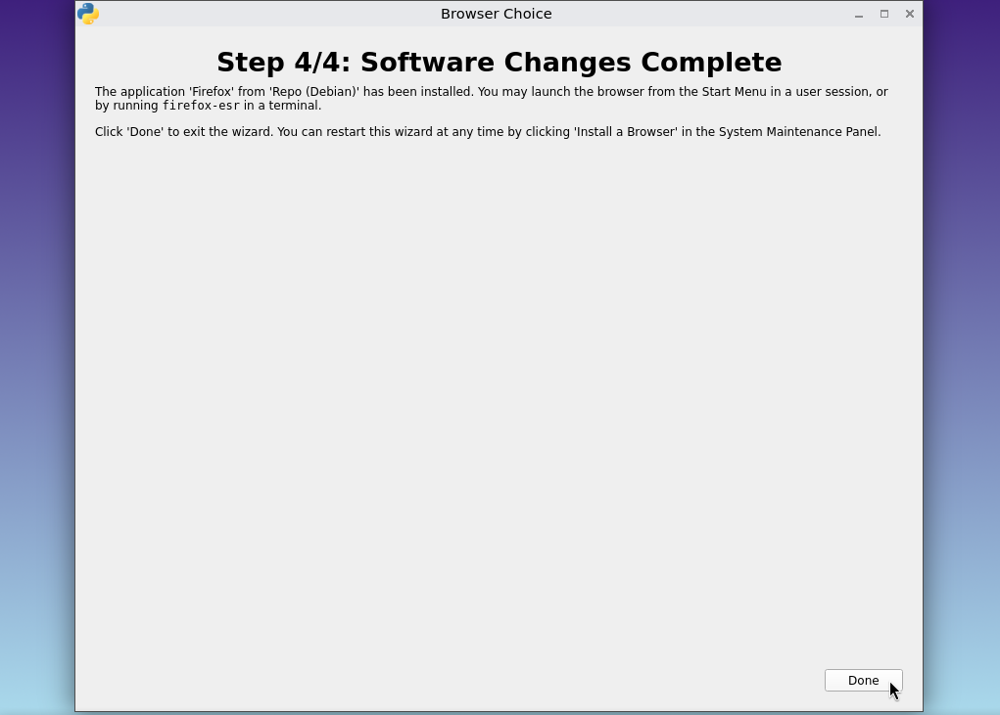
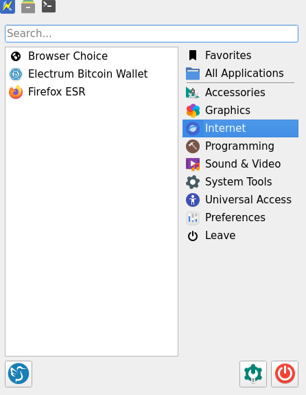
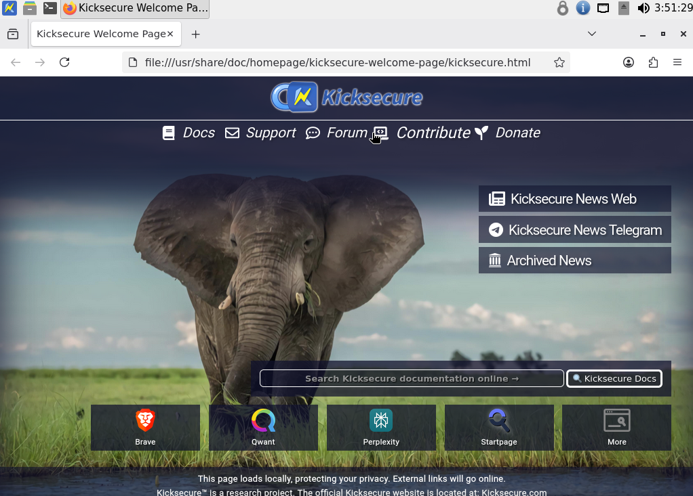

We believe security software like Kicksecure needs to remain Open Source and independent. Would you help sustain and grow the project? Learn more about our 14 year success story and maybe DONATE!
BrowserDocumentationChromePrevious page: BrowserIndex page: DocumentationNext page: ChromeBrowser Choice - Browser Selection Installer Dialog
HowTo: Install a browser using browser-choice.
browser-choice helps you install and remove web browsers using a simple
graphical wizard.
Introduction
Browser Choice is a user-friendly installer dialog for choosing a web browser on Kicksecure. It provides a convenient way to install or remove browsers without forcing a single default choice for all users.
For background and technical details (design, plugin system, inclusion criteria), see Browser Choice (developers). For broader context on default browser considerations, see Default Browser (dev).
Figure: Browser Choice

Browser Installation
1
Boot into Persistent Mode | SYSMAINT Session
In the Kicksecure GRUB boot menu, select
PERSISTENT Mode | SYSMAINT Session | system maintenance tasks
and press Enter.
Figure: Kicksecure GRUB Boot Menu

2
Click Install a Browser
In the System Maintenance Panel, click
Install a Browser.
Figure: System Maintenance Panel

3 Select a browser from the list
In the Browser Choice wizard, select the browser you want to install.
Figure: Browser Choice Wizard, Step 1/4: Select Application
4 Select Firefox (as an example)
Select Firefox, then click Continue.
Figure: Browser Choice Wizard, Step 1/4: Firefox Selected

5 Source of installation
Choose the installation source, ensure Install is
selected, then click Continue.
Figure: Browser Choice Wizard, Step 2/4: Choose Installation Options

Choices for installation:
- Either from the Debian repository, which is going to be the ESR version.
- Rapid Release version from the official Firefox repository.
- The Rapid Release version of Firefox, verified and uploaded to the Flathub repository.
Select: Install
Don't update software database before installation:
Means do not run apt update before installing the
package.
6 Installation command review
Review the command that will be executed, then click
Continue to proceed.
Figure: Browser Choice Confirmation Dialog: Command Preview

7 Wait for the installation to complete
Wait until the operation finishes, then click
Continue.
Figure: Browser Choice Wizard, Step 3/4: Applying Software Changes

8 Installation finished
Click Done, then restart or reboot the system.
Figure: Browser Choice Wizard, Step 4/4: Software Changes Complete

9
Boot into USER Session
In the Kicksecure GRUB boot menu, select
PERSISTENT Mode | USER Session | daily activities and press
Enter.
Figure: Kicksecure GRUB Boot Menu

10 Start the browser.
Open the applications menu, select the Internet
category, then click Firefox ESR.
Figure: Kicksecure Application Menu: Firefox ESR

11 Done
Confirm Firefox starts successfully and loads the Kicksecure Welcome Page.
Figure: Firefox ESR: Kicksecure Welcome Page

Plugins
Features a plugin based design and multiple installation types.
Criteria for inclusion into browser choice
Forum Discussion
Browser Choice forum discussion
Categories: Design